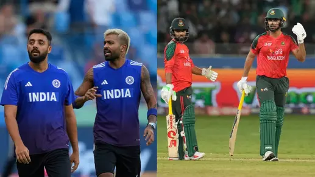

Football: Champions League Highlights
Exciting matches this week as top European clubs battle for glory in the Champions League.
Read more
Exciting matches this week as top European clubs battle for glory in the Champions League.
Read more
The playoff race intensifies as teams fight for a spot in the finals — highlights and scores here.
Read more
Top seeds clash in intense matches — see who’s making headlines this week on the court.
Read more
A place in the Asia Cup Super 4s will be at stake when India take on Bangladesh at the Dubai International Stadium on Wednesday. The winner of the match will almost seal a place in the Asia Cup final.
Read more
The 2025 Formula 1 season is heating up with intense rivalries, dramatic overtakes, and record-breaking performances. Drivers are pushing their limits as the championship battle tightens heading into the Grand Prix weekend.
Read more
With the NFL Draft just around the corner, teams are analyzing top college prospects and trade possibilities. Fans are eager to see which future stars will make the leap to the big stage and reshape their franchises.
Read more
A place in the Asia Cup Super 4s will be at stake when India take on Bangladesh at the Dubai International Stadium on Wednesday. The winner of the match will almost seal a place in the Asia Cup final.
Read more
Updated: Nov 5, 2025, 03:43 am
Mac Allister heads Liverpool to win over Real Madrid

Slot: An impressive win over an incredible Real Madrid sideArne Slot heaps praise on Liverpool's performance,
especially Conor Bradley, following their crucial 1-0 win over Real Madrid in the Champions League.
Alexis Mac Allister's second-half header capped a dominant performance as Liverpool ended Real Madrid's 100 percent Champions League record with a 1-0 victory to inflict more pain on the the returning Trent Alexander-Arnold.
On a night when £100 million signing Florian Wirtz finally flourished it was the diminutive Argentina international who finally broke goalkeeper Thibaut Courtois' almost one-man resistance in the 61st minute.
Back-to-back victories for the first time since late September moved Liverpool into sixth place in the table. They are now level on points with Madrid, who failed to score in a game for the first time this season.
Saturday's win over Aston Villa may have been hailed as significant after a run of six defeats in seven matches but this was the real deal in terms of performance and attitude.
Liverpool beat a depleted Madrid 2-0 at Anfield a year ago but former Reds midfielder Xabi Alonso's side were virtually at full-strength and being dominated by a team missing British record signing Alexander Isak, first-choice goalkeeper Alisson Becker and £40 million full-back Jeremie Frimpong.
Aside from Courtois' defiance the game looked to have hinged on a first-half free kick for a Aurélien Tchouaméni handball which was actually inside the penalty area only for VAR to advise that it was not, in fact, a handball at all.
Liverpool responded by redoubling their efforts, which were rewarded when Mac Allister rose unmarked to head in Dominik Szoboszlai's free-kick.
Alexander-Arnold's name had been booed throughout but his arrival in the 81st minute produced a cacophny of jeers, which continued with every touch.
The singing of the name of Steven Gerrard, sat in the directors' box, was a pointed dig for the former academy graduate who decided not to stay with his boyhood club.
Earlier in the day the England international's mural on the side of a house in nearby Sybil Road had white paint thrown at it with the words 'Not welcome', 'Rat' and 'Adios el rata' daubed on it prompting a clean-up operation before kick-off.
But his return was merely a sideshow to the main event with his replacement in the right-back slot Conor Bradley, whose tackle on Kylian Mbappé in this fixture last year went viral, getting under the skin of Vinícius Júnior so much the winger brought him down as he threatened to burst into the penalty area.
For all Real's attacking resources it was familiar foe between the posts who played the key role in the first half.
Courtois, whose individual performance in the 2022 final ended Liverpool's hopes of a seventh triumph, made two crucial saves from Szoboszlai -- one brilliantly with his leg from point-blank range.
Aside from a half-hearted penalty shout for Andy Robertson's challenge on Arda Güler Real threatened little until Giorgi Mamardashvili's feet denied Jude Bellingham -- becoming the youngest player to make 50 Champions League appearances aged 22 years 128 days.
Mbappé, who had scored in all but two of his 17 matches for club and country, ballooned his only attempt well over.
Early in the second half Courtois tipped over headers from Virgil van Dijk and Hugo Ekitike from successive corners with the Frenchmen nodding wide from the third.
The goalkeeper then batted away a Szoboszlai free kick but was powerless to stop the 5ft 7in Mac Allister planting a powerful free header through his arms.
Mbappé sliced a shot wide as the visitors, now bolstered by Rodrygo, pushed for the equaliser but it was Courtois, saving from substitute Cody Gakpo, who continued to be the more active.
Tuesday 4 November 2025 23:37, UK
Coco Gauff keeps qualification hopes alive as world No 1 Aryna Sabalenka closes in on semi-finals in Riyadh;
Novak Djokovic overcame Alejandro Tabilo to reach the quarter-finals in Athens;
Cameron Norrie battled through a brutal match to progress through to the Moselle Open quarter-finals.

Defending champion Coco Gauff kept her hopes alive of reaching the knockout stages of the WTA Finals with victory over Jasmine Paolini.
Defeat by fellow American Jessica Pegula in her opening group match in Riyadh had put Gauff in trouble but she eased to a 6-3 6-2 win against Paolini.
The Italian has been struggling with illness and again was unable to show her best level physically, with Gauff overcoming a wobble midway through the first set.
The third seed told Sky Sports: "I'm really happy with how I played, definitely a turnaround from my first match.
"It's the beauty of this tournament, you have another chance to prove yourself.
Hopefully I can do well in my next one to give myself a chance to stay in this tournament."
Paolini is eliminated having not won a set,
while Gauff is likely to need to beat Aryna Sabalenka to give herself a chance of reaching the semi-finals.
Laura Robson on Gauff's victory: "A really solid performance.
She's almost her toughest critic at times and you just hope she's able to appreciate how well she's come out and played given everything else."
Raunak Bose|TIMESOFINDIA.COM|Sep 28, 2025
the los angles lakers made a noteworthy move ahead of the 2025-26 NBA season
made a noteworthy move ahead of the 2025-26 NBA season, announcing on September 27, 2025, that they had signed forward anton watson
and guard Nate Williams to their training camp roster.

Watson, a 6-foot-8 forward out of Gonzaga University,
was selected 54th overall in the 2024 NBA Draft by the Boston Celtics.selected 54th overall in the 2024 NBA Draft by the Boston Celtics.
After spending much of his rookie year in the G League and seeing brief NBA action with both the Celtics and the New York Knicks,
Watson now has a fresh opportunity with Los Angeles as he looks to secure a long-term role in the league.
Updated 23 September 2025 at 20:49 IST
India will take on Bangladesh in an Asia Cup Super 4s encounter at the Dubai International Stadium on Wednesday.

A place in the Asia Cup Super 4s will be at stake when India take on Bangladesh at the Dubai International Stadium on Wednesday.
The winner of the match will almost seal a place in the Asia Cup final.
Published By : Anirban Sarkar Published On: 23 September 2025 at 20:49 IST